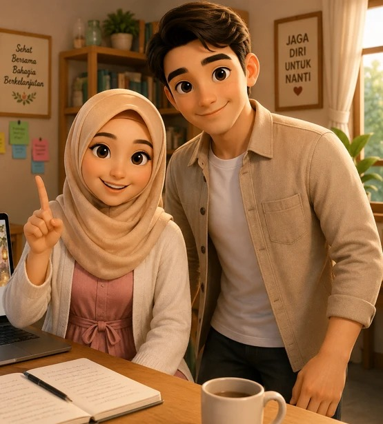

Kakak/Abang sudah mengisi beberapa aktivitas SHINING. Perjalanannya tinggal sedikit lagi, dan setiap jawaban Kakak sangat berarti.

Jawaban Kakak membantu menyusun edukasi pranikah yang lebih baik bagi catin Indonesia.
Aktivitas yang sudah terisi tersimpan, tidak perlu mengulang dari awal.
Isi lewat HP kapan saja, sesuai waktu luang Kakak.